おけもんライフハックBGM TTPリサーチ資料
場面別BGMの専用YouTubeチャンネルを立ち上げる前に、真似する相手・長さ・タイトルと概要欄・サムネと再生中の画面・曲の作り方とSunoの制限・お金の流れを1枚に並べました。数字には出典を、推測には推測の印を付けています。
この資料をもとにした会議の掛け合いはこちら →まさに私のようなADHDが日々健やかにワクワク過ごすためにっていうので、作業用、休息用などなどいろんなバージョンのやつを作っていけたら、何より私が楽しいよねー😆
やるなら専用チャンネル立ち上げるよー
収益を上げているチャンネルのTTPだよね。概要欄、BGMの長さ、概要欄の内容などなど。あとサムネやBGMが流れている間の背景などなど
ひとことで言うと
作業用・休憩用・着手・ポモドーロ・片付け・寝る前と、場面ごとに版を増やします。毎回いちばん先に聴くのはおけちゃんです。
いちばん近いのは onia music（ADHD向けのlofiを、AIで作ったと書いたうえで出して伸びている）。ほかに Amplifocus／look, I’m focused／炬燵-こたつ-【深ぇ森】。
ポモドーロは約2時間が定番の長さです。曲はSuno Proで作り、6分の曲を1回ダウンロードして手元で伸ばせます。
いちばん近いお手本は、韓国の onia music です
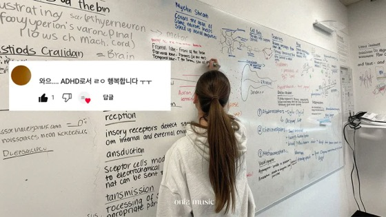
サムネは、写真の上に視聴者コメント風の吹き出し（「ADHDとして幸せです ㅠㅠ」）を重ねた形。459万回再生。
 おとなしいADHDのためのlofi2026-05-12・2時間19分
おとなしいADHDのためのlofi2026-05-12・2時間19分 ショートの代わりにつけておくポモドーロ2026-06-27・2時間55分
ショートの代わりにつけておくポモドーロ2026-06-27・2時間55分 高機能ADHDの過集中勉強音楽2026-08-15・3時間12分
高機能ADHDの過集中勉強音楽2026-08-15・3時間12分| 公開日 | タイトル（AI訳） | 長さ | 再生数 |
|---|---|---|---|
| 2025-10-14 | 狂った集中モードON ADHDでも勉強したくなる曲たち | 82分 | 459万回 |
| 2026-05-12 | おとなしいADHDのためのlofi BGM・長時間の勉強用 | 2時間19分 | 86万回 |
| 2026-06-27 | ショート動画の代わりにつけておくADHD集中ポモドーロ（30/5） | 2時間55分 | 40万回 |
| 2026-08-15 | 高機能ADHDの過集中勉強音楽 | 3時間12分 | 44万回 公開から約6週 |
2025年10月の動画から確認。再生数は2026-09-26にyt-dlpで取得 実測。登録者数は今回測っていません。
2025-10の動画は13曲・27分を約3周で82分。2026-08の3.2時間は22曲・64分を約3周。概要欄の曲目の最後に「repeat」と書いてあります 実測
概要欄に「AI-supported composition, human-led creative control and editing.」（作曲はAIの手を借り、仕上げは人）。書いたうえで伸びています 実測
「ADHDでも」「おとなしいADHD」「高機能ADHDの過集中」。責めない言い方で、聴く人が自分を見つけられます
つい開いてしまう動画の代わりにポモドーロを置く発想。ADHDの暮らしにそのまま効く見せ方です
注意：2025-10の動画の概要欄には「pic - pinterest」とあり、写真を借りていました。後の動画は「Pic - onia music」に変わっています。真似するのは後のほうです。
真似する3チャンネル
Amplifocus 英語・ADHD
2025-12-11に開設して、まだ10ヶ月。最大45.9万回。「Not music. A tool.（音楽じゃない、道具です）」と言い切り、40Hzのガンマ波1本に絞っています。いま伸びる形をいちばん早く見せている例です。
週1本ペース 実測／推定月収 $511〜5,106 推測
look, I’m focused 英語・ADHD＋ポモドーロ
名前からADHD×ポモドーロ。長い配信型で月1本ほど、最大43.4万回。概要欄にBetterHelp（オンラインカウンセリング）との有料スポンサー表記があり、広告以外の稼ぎ方まで見えます。
スポンサー表記は概要欄で確認 実測／推定月収 $78〜775 推測
炬燵-こたつ-【深ぇ森】 日本語・ADHD
日本語のADHD向けポモドーロ＋ブラウンノイズで頭ひとつ抜けています（最大79万回）。概要欄でBASE BREADの企業タイアップを確認。ゲーム実況や雑談も混ざる個人チャンネルです。
タイアップは概要欄で確認 実測／推定月収 3.4万〜28.5万円 推測
出典：01班 19チャンネルを yt-dlp で実測（2026-09-26）。推定月収は「月の再生数×RPMのレンジ」で出した桁の目安です。
場面ごとに、よく見る長さがあります
検索語ごとの長さの中央値。02班が275本から集計 実測。ポモドーロの縞は25分集中・5分休憩の目安です。
読み取れること
- 再生数の多い58本のうち34本が1〜3時間 実測
- 日本語の「寝る前」は8時間でなく3時間。一晩中ではなく、寝つくまでを想定しているようです 推測
- ポモドーロ版は、チャプターを「セット1・休憩1…」で切ると、再生バーで残りが分かります（58本中26本がチャプターあり）実測
- 長い動画ほど、1回の再生で視聴時間が積もります。1回30分聴かれれば、8,000回で収益化条件の4,000時間に届きます（計算）
タイトルと概要欄の型
日本語の王道 【場面・BGMの種類】効き目・特徴【音の種類など】 例：【勉強用・作業用BGM】α波で超集中【波の音×オルゴール】英語 STUDY WITH ME 時間を先頭に｜属性を並べる｜絵文字で季節や景色 例：2-HOUR STUDY WITH ME 🍂 / calm lofi英語 ADHD直球 ADHD＋Relief／Focus／Support を先頭近くに。医療の言葉（Cure・Treatment）は58本で0件韓国 onia Playlist（歌詞なし）＋「ADHDでも」「高機能ADHDの」＋絵文字🎧おけちゃん用のタイトル案（02班）
- 【ポモドーロタイマー】25分集中+5分休憩×4セット｜ADHD向け作業用BGM 2時間
- 【着手用BGM】動き出せない朝の一歩目に｜ADHDのやる気スイッチ
- 【片付け・掃除BGM】やる気が続くテンポ｜ADHDの部屋リセットタイム
- 【寝る前BGM・3時間】頭の中がうるさい夜に｜ADHDの入眠サポート
数字は02班の58本から集計 実測。「AIで作ったと明記」は集計では58本中2本でしたが、onia の4本も概要欄に書いていて、拾い漏れがありそうです。登録者31.3万の study timer は「休憩用BGMでAI音楽を試したが、今はほぼ人の作曲」と概要欄に書いています。
サムネと、再生中の画面（実物）
大きい文字が1つ／ADHDの文字
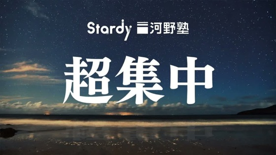
Stardy「超集中」9,297万回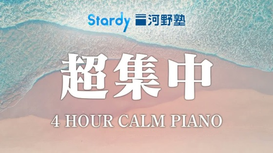
Stardy 波の音で4時間832万回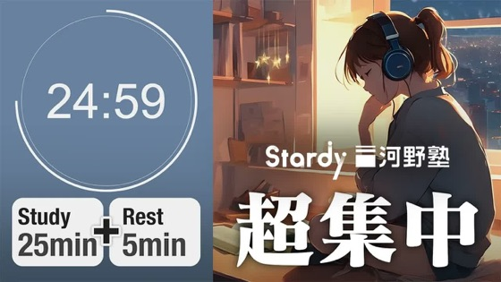
Stardy ポモドーロ25+5359万回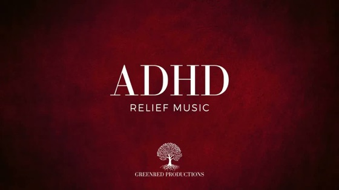
Greenred「ADHD RELIEF」1,975万回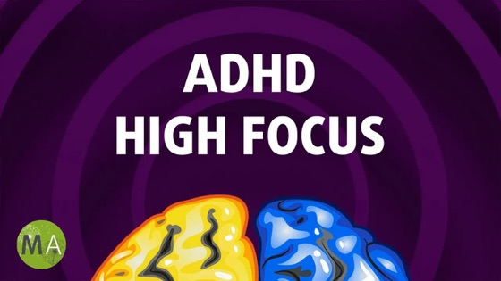
Mind Amend「ADHD HIGH FOCUS」754万回タイマーがサムネに写っている
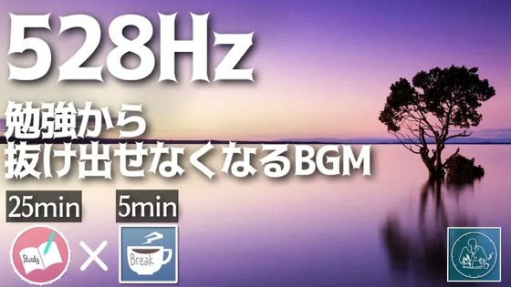
study timer 528Hz1,931万回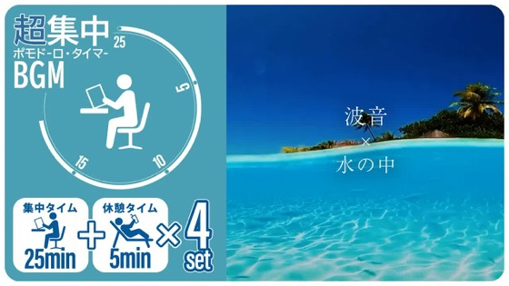
STUDY BGM MAKER 25+5×4698万回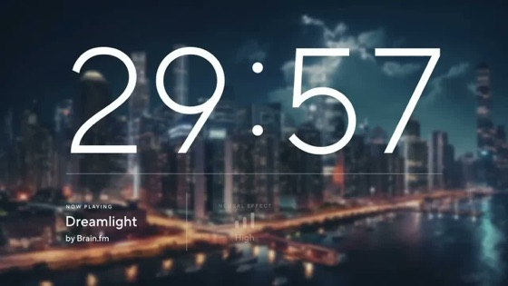
Brain.fm 30 Minute Focus490万回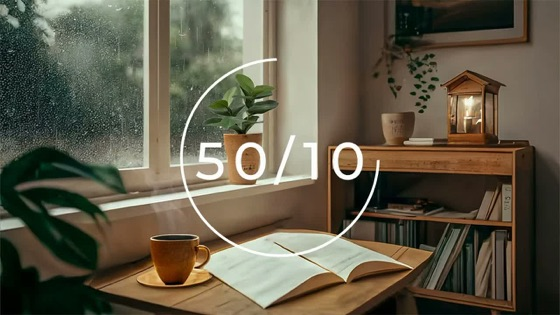
Study Pomodoro 50/10347万回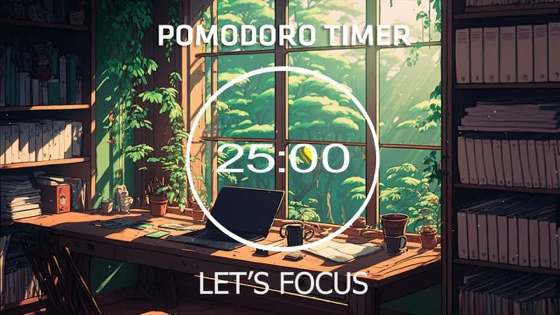
Study Pomodoro 森の朝97万回実写の机や景色
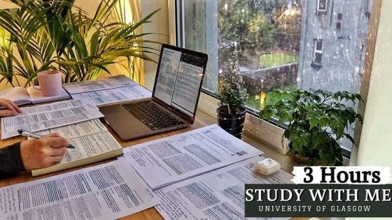
Merve 3時間 雨の音2,553万回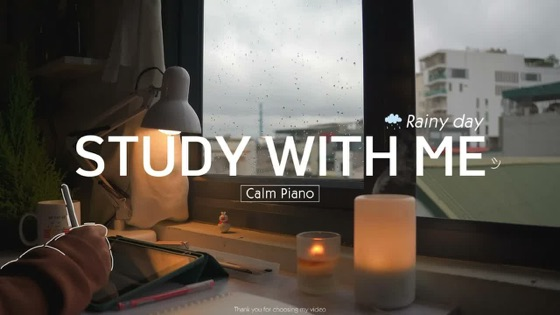
Carrot TD 2時間 ピアノ1,327万回 Abao in Tokyo 横浜の夕方425万回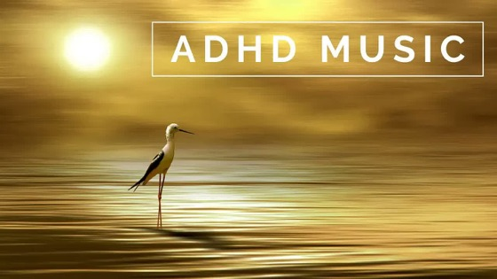
Greenred「ADHD MUSIC」734万回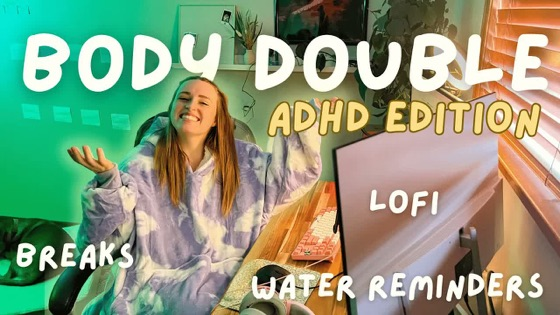
Body Double ADHD版（顔あり・少数派）8.4万回真似しない他人の作品の絵やキャラを借りている型
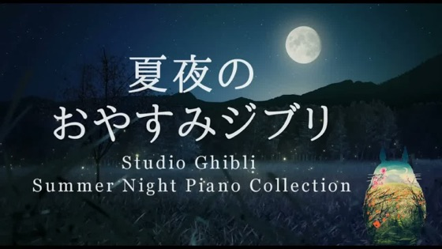
おやすみジブリ（ジブリの世界を借りている）4,835万回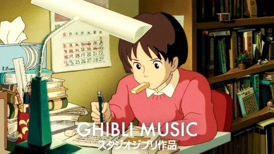
Ghibli Music（ジブリの絵柄）1,225万回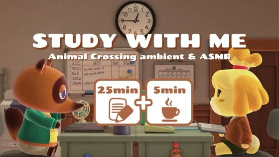
どうぶつの森のポモドーロ（ゲームのキャラ）524万回 洋楽集（歌手の写真／再生中はハーレイ・クインのファンアート）1,647万回再生数が大きくても、絵やキャラの権利は他人のものです。うちは自前の画面と、ChatGPTに描いてもらう絵で作ります。
再生中の画面（動画から1コマずつ切り出した実物）
 海の夕景をゆっくりループ。文字もタイマーも無し（9,297万回）
海の夕景をゆっくりループ。文字もタイマーも無し（9,297万回） 星空のタイムラプス。文字無し（7,968万回）
星空のタイムラプス。文字無し（7,968万回） 休憩中に「歩く・水を飲む」の記号とカウントダウン。ADHD向けにいちばん具体的
休憩中に「歩く・水を飲む」の記号とカウントダウン。ADHD向けにいちばん具体的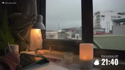
机の写真＋右下に小さいポモドーロ表示「21:40」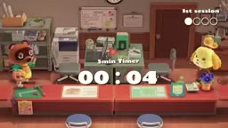
真似しない どうぶつの森の画面＋カウントダウン03班：サムネ38本と、再生中の画面10本を実物で確認 実測。いちばん再生されている2本（合計1.7億回）は、文字も動きもほとんど無い映像のループでした。邪魔しない画面のほうが上位に来ているのかもしれません 推測
うちの画面の3案（03班）
A 静かな背景＋ずっと出ているタイマー
グラデーションの背景に、大きい残り時間・セットの丸・今の状態。サムネは場面名を1語だけ大きく（「集中」「片付け」）。絵が要らないので、すぐ作れます。
B 実写の部屋＋小さいタイマー
作業部屋の写真か、フリー素材の実景写真。右下にポモドーロの小窓。雰囲気の絵を足すなら、背景の質感だけをChatGPTに頼みます。
C 休憩の中身を文字と記号で出す
「歩く」「水を飲む」を、休憩のたびに大きく出します。休憩のつもりがスマホ、を防ぐ見せ方。和みの絵がほしい時はChatGPTに写真ふうの1枚を頼みます。
タイマーの部品の試作（コードで作れる部分だけ）
背景・時計・セットの丸・進みぐあいのバーは、すべてコードで作れます。ボタンで休憩の画面に切り替わり、休憩の中身が出ます。
背景を何にするか（静かな景色か、はるかが隣にいる作業部屋か）は、会議で割れたところです。会議の掛け合いを見てください。
曲づくりとSunoの制限、先人の対応
無料
個人・非商用だけ。YouTubeの収益化には使えません。後から有料にしても、無料の時の曲はさかのぼって使えるようにはなりません。
Pro（いまのプラン）
商用利用OK。解約した後も、その時に作った曲の商用利用は続きます。数えるのはダウンロードの回数です。
Premier
Studio経由の書き出しで、ダウンロード枠を使わずに曲を取り出せます（下の先人の報告）。
出典：Suno利用規約（2026-08-10改訂・9/3発効、01班が suno.com/terms を確認）、musicmake.ai、terms.law。ダウンロード制限は2026-09-03から。
Proのまま始める道
onia のように数曲を並べて3周させる形も同じ道でできます。1本に使う曲数×本数が月20回に収まれば、Proのままで回ります。
量を出したくなったら（Premierに上げる）
リベ図書館の先人から借りる5つ（23本を読んだ04班）
YouTubeのルール
- 2025-07-15、「繰り返しの多いコンテンツ」の方針が「inauthentic content（本物でないコンテンツ）」に改められました。狙われるのはテンプレートで量産した変化の少ないもの 公式ヘルプ
- Google日本法人は「生成AIのコンテンツを対象にした方針ではない」とコメント（ITmedia 2025-07-10）
- 当事者のおけちゃんが自分の場面のために作る、という切り口がそのまま独自性になります 推測
気をつけること
- AI合成の表示ラベル：歌のないオリジナルBGMは対象外の可能性が高いものの、音楽に絞った公式の明言は見つかっていません 未確認
- Sunoの曲が他人のContent ID登録とぶつかり、広告収益が相手に回る（Claim）報告が増えているようです。チャンネル停止につながるStrikeとは別物です 二次情報
- 画面操作の自動化や、Sunoを通さない外部APIは、著者自身がグレーと書いていました。うちは公式の道で進めます
お金の流れ
収益 ＝ 月の再生数 × RPM ÷ 1,000 月5万円に要る月間の再生数：
¥500/1000回
¥200/1000回
$3/1000回
$1/1000回
RPM：日本の作業用BGM ¥200〜500、AI量産BGMチャンネルの売買実績 ¥770〜1,700（rakkoma）、英語圏 $1〜10（outlierkit）。1ドル150円で換算。近い実例の炬燵【深ぇ森】は、直近の1本あたり平均10.5万回です。
収益化の条件
登録者1,000人＋直近12ヶ月の視聴4,000時間（または直近90日のShorts 1,000万回）。1回30分聴かれるなら8,000回で時間の条件に届きます。2027-02-01から基準が倍（8,000時間）になる予定と告知されています 二次情報
出ていくお金
Proのまま：増えるのは0円。Premierに上げたら：+約$20/月。道成さんは、Studioの扱いが固まるまで年払いでなく月払いを選んでいました。
時間の形は、先人の記事から組んだ仮説です 推測
広告以外の稼ぎ口（実例）
企業タイアップ（炬燵【深ぇ森】×BASE BREAD）／有料スポンサー（look, I’m focused×BetterHelp）／アプリ課金が本業でYouTubeは入口（Brain.fm）／レーベル・配信・グッズ（Lofi Girl）。国内には、Content ID登録したBGMが他人の動画で使われると収益が入る「BGM収益化サービス」もあります（1再生約0.006円・代理企業経由）。
先人の進め方と、うちの担当
数字を目標にすると実績が落ちたことがあります（7月は目標なしで6回完走、8月は10回目標で3回）。数字はAIが見て、おけちゃんは聴いて楽しいかだけ見てください。
次の一歩
チャンネル名・アイコン案をAIが出す
名前の重複チェックと、アイコンの案を並べます。アイコンの絵はChatGPTに描いてもらいます。
おけちゃんがチャンネルを作る
名前が決まったら、YouTubeで新しいチャンネルを作るボタンを1回押してください。
1本目（25分ポモドーロ）をAIが作って上げる
Suno Proのまま始められます。6分の曲をダウンロード1回→手元で2時間に伸ばし、タイマーの画面と合わせて上げます。Premierは量を出したくなってからで間に合います。
言語・チャンネル名・1本目の背景は、会議の掛け合いの最後でおけちゃんに選んでもらいます。